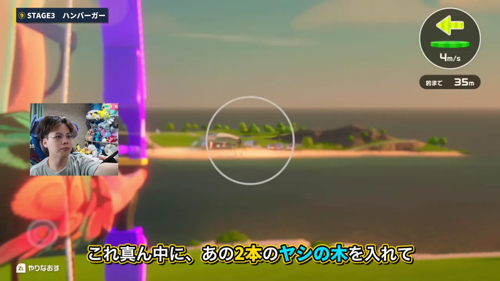

攻略ガイド

【スポッコフォト】全105か所の場所一覧NEW
島めぐりレコードのスポッコフォトNo.001〜105の撮影場所を、ゲーム内の地図画面で1枚ずつ紹介。足りない番号をタップすればその場所へ直接飛べます。

【アーチェリー】隠し的12個の当て方まとめ
広場・砂浜・草原・山岳の4ステージに隠れているリンゴ・ハンバーガー・ピニャータ・プリン・メロン・トースター全12個を、どこを目印に撃てば当たるか画像つきで解説。一番簡単な1個と、一番難しい1個も。
攻略動画

当ページは、Nintendo Switch 2 向けソフト「Nintendo Switch スポーツ リゾート」の攻略情報をまとめたページです。ゲーム実況チャンネル「やまむー【yamamu】」が実際にプレイして検証した一次情報をもとに、アーチェリーの隠し的（リンゴ・ハンバーガー・ピニャータ・プリン・メロン・トースター）の当て方などを、動画と記事の両方で解説しています。ボウリングなど他の種目の攻略も順次追加していきます。